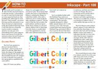

Inkscape
Número 22 - 2025 agosto
Descarga (PDF 1.5 MB, inglés)
Inkscape
Número 21 - 2025 agosto
Descarga (PDF 1.9 MB, inglés)
Inkscape
Número 20 - 2025 agosto
Descarga (PDF 1.5 MB, inglés)
Inkscape
Número 19 - 2025 agosto
Descarga (PDF 4.4 MB, inglés)
Inkscape
Número 18 - 2025 agosto
Descarga (PDF 1.8 MB, inglés)
Inkscape
Número 17 - 2025 agosto
Descarga (PDF 1.7 MB, inglés)

Inkscape
Número 16 - 2025 agosto
Descarga (PDF 1.6 MB, inglés)
Inkscape
Número 15 - 2025 agosto
Descarga (PDF 1.5 MB, inglés)
Inkscape
Número 14 - 2025 agosto
Descarga (PDF 2.4 MB, inglés)
Inkscape
Número 13 - 2025 agosto
Descarga (PDF 2.9 MB, inglés)
Inkscape
Número 12 - 2025 agosto
Descarga (PDF 3.1 MB, inglés)
Inkscape
Número 11 - 2025 agosto
Descarga (PDF 3.1 MB, inglés)